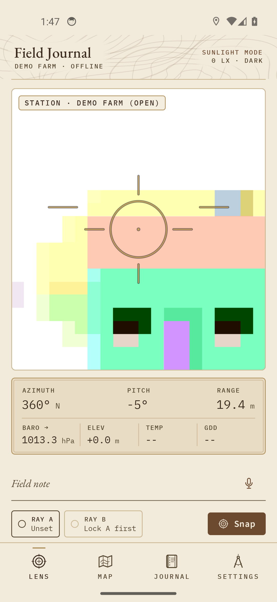
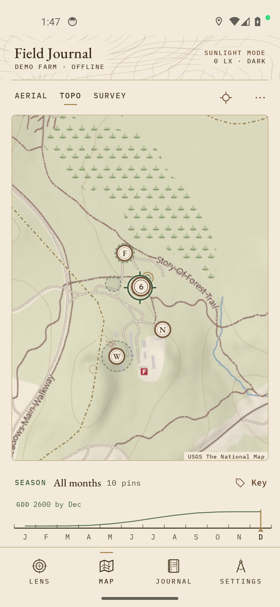
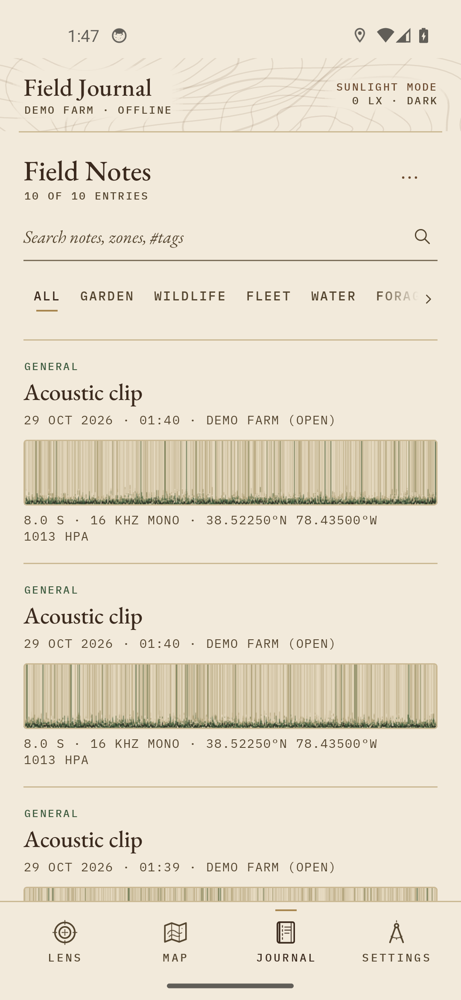
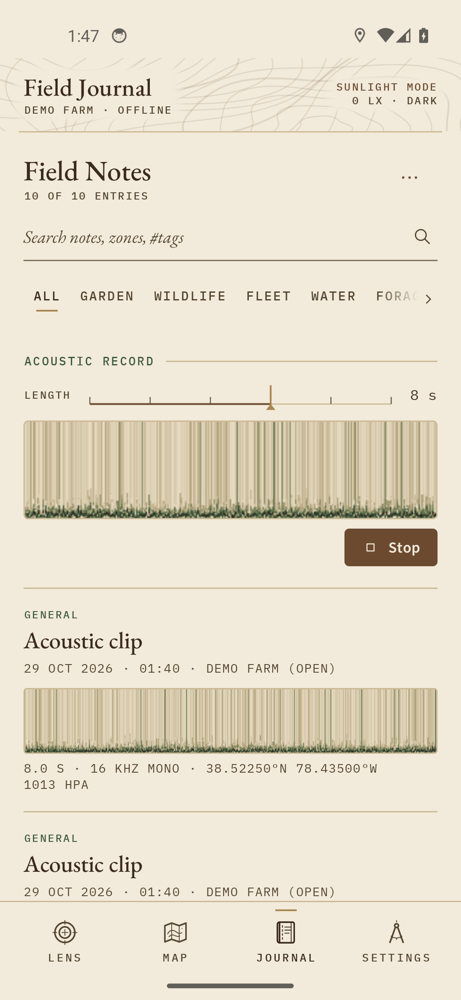
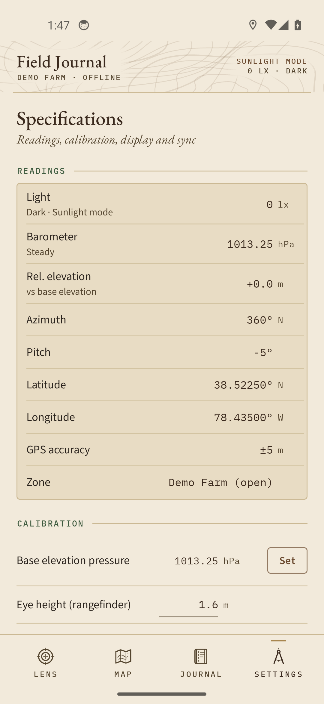

Field-Engineered Display Modes
Tested under extreme field lighting: bright open canopy, evening dusk shade, and tactical zero-lux red to preserve natural dark-adapted vision.





Core Capabilities
⊙ Optical Lens & Rangefinder
CameraX viewfinder HUD with pitch, azimuth, and trigonometric distance estimation based on calibrated eye height. Dual-ray (Ray A / Ray B) vector intersection accurately triangulates distant landmarks and wildlife sightings without moving to target.
⧉ Zero-Key USGS & OSM Maps
Keyless USGS Topo, Aerial Imagery, and OpenStreetMap Mapnik tiles with custom color-matrix night/dusk shaders. Single-link clustering groups field observations, while a 12-month season ruler displays cumulative base-50°F Growing Degree Days (GDD).
∼ Mel-Waterfall Spectrogram
Built-in 16 kHz mono acoustic recorder with Hann-windowed FFT and 64-bin mel waterfall normalisation. Visualise bird calls, amphibian choruses, and equipment harmonics directly in the field guide feed.
↑ Zero-Typing Environmental Stamp
Every note automatically binds hardware barometric pressure (hPa), 3-hour microbarograph pressure trend, relative elevation offset, GPS accuracy, and compass bearing with zero keyboard entry required.
§ Obsidian Vault Export
Exports notes directly into standard YAML frontmatter Markdown files with tags, wikilinks ([[Vault: Note]]), GPS coords, and embedded media, ready to open in Obsidian or sync via git.
Δ Glove & Physical Controls
Designed for damp field gloves: volume keys double as hardware triggers (hold Volume Down for speech recognition, tap Volume Up to snap) with high-contrast WCAG AA tactile plates.
Installation
Build directly from source or download debug APK artifacts from GitHub Actions CI:
- Clone repository:
git clone https://github.com/charles-forsyth/field-journal.git - Set JDK 17 and Android SDK:
export JAVA_HOME=$(brew --prefix openjdk@17)/libexec/openjdk.jdk/Contents/Home ./gradlew assembleDebug
- Install on device:
adb install app/build/outputs/apk/debug/app-debug.apk
Citation
If you use Field Journal in research, agronomy field trials, or wildlife monitoring, please cite:
@software{forsyth2026fieldjournal,
author = {Forsyth, Charles E. III},
title = {Field Journal: an offline-first Android field notebook for land, wildlife and agronomy},
version = {1.2.0},
year = {2026},
doi = {pending},
url = {https://github.com/charles-forsyth/field-journal}
}
DOI: pending • License: MIT